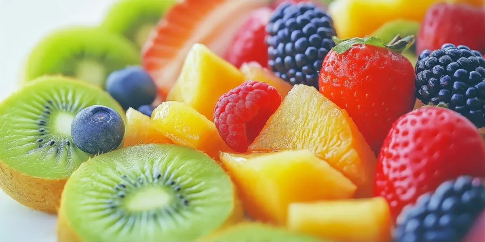
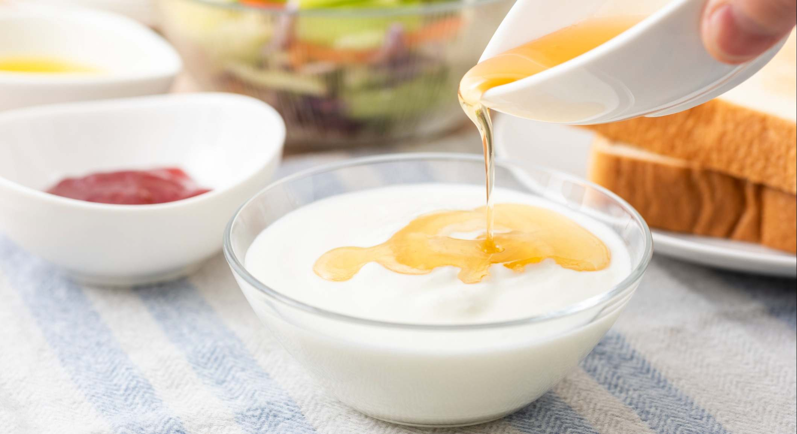

Fruta Fresca de Temporada
Una opción ligera, perfecta para terminar la comida de manera saludable.

Una opción ligera, perfecta para terminar la comida de manera saludable.

Un postre suave, sencillo y tradicional.
